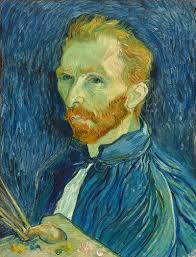
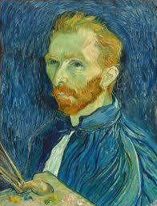

El Impresionismo
El Impresionismo fue un movimiento artístico que surgió a finales del siglo XIX en Francia, caracterizado por su enfoque en la luz, el color y la atmósfera. Los impresionistas rompieron con las convenciones académicas de la pintura al capturar escenas cotidianas y paisajes en exteriores, utilizando pinceladas rápidas y colores brillantes.
Características del Impresionismo
Entre las características más destacadas del Impresionismo se encuentran:
- Uso de la luz natural: Los impresionistas se centraron en la captura de la luz cambiante y sus efectos sobre los colores y las formas.
- Colores vibrantes: Utilizaban colores puros y sin mezclar para crear un contraste visual vibrante, en lugar de utilizar sombras y tonos apagados.
- Pinceladas rápidas y visibles: Los artistas aplicaban pinceladas cortas y visibles que daban la sensación de movimiento y dinamismo.
- Escenas de la vida cotidiana: Pintaban paisajes, escenas urbanas, momentos de la vida diaria y retratos, alejándose de las grandes escenas históricas o mitológicas.
- Interés por la percepción visual: Buscaban capturar la percepción subjetiva del momento, en lugar de representar la realidad de manera exacta.
Autores destacados
Algunos de los pintores más relevantes del movimiento impresionista fueron:
- Claude Monet: Conocido por sus series de pinturas que capturan la luz y el color en diferentes momentos del día, como "Impresión, sol naciente", obra que dio nombre al movimiento.
- Pierre-Auguste Renoir: Pintor conocido por sus retratos y escenas de la vida social, con un enfoque particular en la figura humana y la luz suave.
- Edgar Degas: Aunque más conocido por sus pinturas de bailarinas, Degas capturó de manera impresionante el movimiento humano y la vida cotidiana en sus obras.
- Camille Pissarro: Fue un pionero en la técnica del puntillismo dentro del impresionismo, además de ser un destacado pintor de paisajes urbanos y rurales.
Impacto del Impresionismo
El Impresionismo marcó un punto de inflexión en la historia del arte, desafiando las normas establecidas por las academias y abriendo el camino para futuras corrientes vanguardistas. A pesar de las críticas iniciales y la resistencia del público, los impresionistas cambiaron la forma en que percibimos el arte, influenciando a movimientos como el Postimpresionismo, el Fauvismo y el Expresionismo.
 
